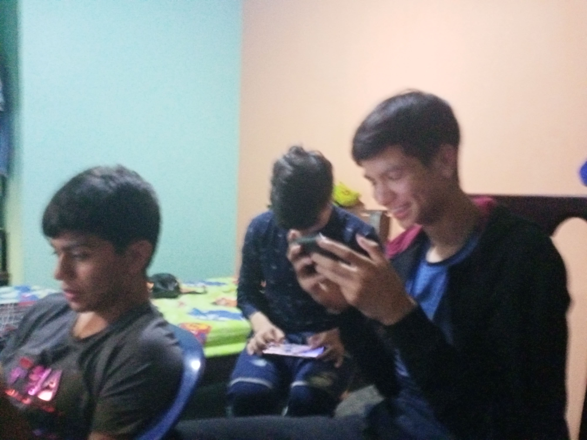
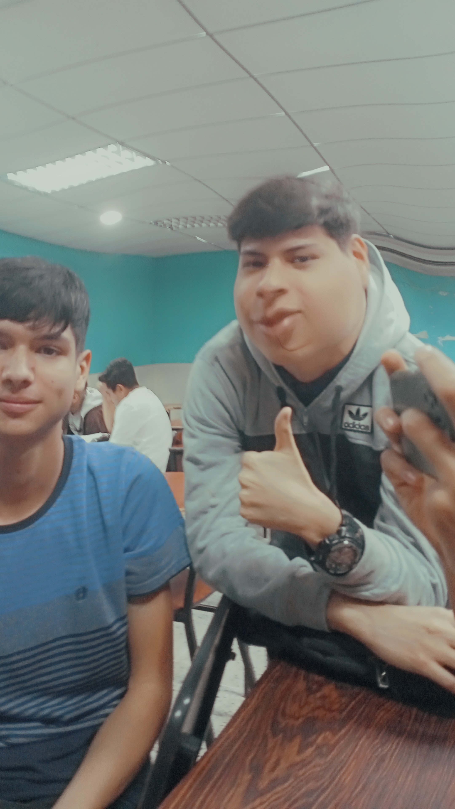

Proyecto Griskol
Se trata de una página web para promocionar los servicios de la empresa griskol ubicada en Santa Ana del Táchira, dicha empresa se encarga de la reparación y mantenimiento de maquinas de contar billetes
Fue Realizada con el fin de aprobar el Trayecto Nro 1 de la carrera de informática en La Universidad Politécnica Territorial Agroindustrial Del Estado Táchira (UPTAI) por 4 estudiantes de la misma. Dichos estudiantes son
- Francisco Skopal (FRANPAL)
- Keiver Calderón (Kiba)
- Daniel Moreno (El papu)
- Juan Quiñonez
PROCESO
Click en la imagen Para Hacer ZOOM

